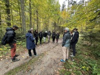
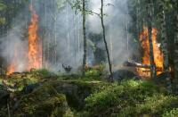

Новини
 Днес, експерти от Дирекция на Природен парк „Рилски манастир” посрещнаха студенти от 4 курс от специалност „Екология и опазване на околната среда” на Лесотехническия университет. Посещението беше част от планираната им учебна практика по специалността „Защитени природни територии“.
Студентите, заедно с техните ръководители гл. ас. д-р Христина Банчева-Преславска и гл. ас. д-р Георги Кадинов, се запознаха с принципите и подходите при поддържане и управление на Природен парк "Рилски манастир", както и с постиженията на Дирекцията в областта на популяризиране на уникалното биологично разнообразие на района.
Провеждането на такива практики има за цел да подпомогне студентите при тяхната практическа подготовка в областта на екологията и опазването на околната среда.
 На днешния ден отбелязваме Световния ден на туризма. Целта на този ден е да се информира обществеността в световен мащаб за значението на туризма, както и за неговата социална, политическа, финансова и културна стойност за всички хора по света.
На днешния ден отбелязваме Световния ден на туризма. Целта на този ден е да се информира обществеността в световен мащаб за значението на туризма, както и за неговата социална, политическа, финансова и културна стойност за всички хора по света.
Всяка година Световният ден на туризма е посветен на конкретна тема и тази година тя е “Туризъм и развитие на селските райони ”.
Природен парк „Рилски манастир“ е защитена територия с изключително биологично разнообразие и културно-историческо наследство в национален и международен мащаб, която ежегодно привлича стотици хиляди посетители.
През територията на парка преминават множество пешеходни туристически маршрути с висок интензитет на посещаемост, а именно:
- Рилски манастир – Кирилова поляна – Сухото езеро – Кобилино бранище
- Рилски манастир – Рибни езера – Смрадливото езеро
- Рилски манастир – Мальовица
- Рилски манастир – Седемте Рилски езера
- Рилски манастир – Радовичка река – хижа “Македония”
- Международен туристически маршрут Е-4 Пиринеи – Алпи – Олимп
Всички тези маршрути са добре обозначени и маркирани със съответните цветове от парковата дирекция.
 За всеки от нас е жизнено важно да опазваме природата и близките си от тежките последствия на горските пожари. Те са не само върху флората и фауната, работата на горските служители и огнеборците, но често засягат имоти, земеделски култури и бизнеси. Помогни посланието да достигне до всеки - безотговорността е най-опасната искра!